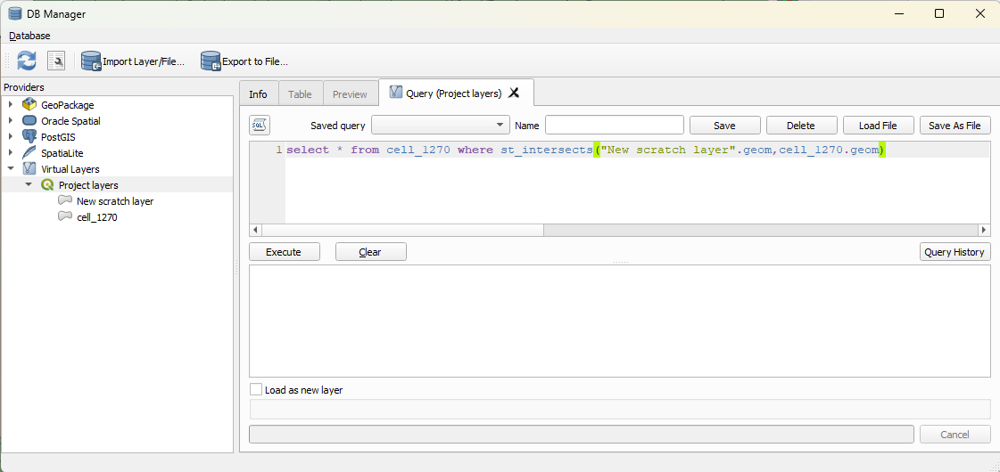

שאילתות מרחביות לא טבלאיות
למה אנחנו רגילים?
שאילתות מרחביות טבלאיות. לדוגמא - עם qgis.
לדוגמא - עם sql מרחבי. 
מה המגבלות?
הכל מסודר בטבלאות.
הוספת רשומה, עמודה, ישות או קשר בין טבלאות - מורכב - מהקל אל הכבד.
מבנה רשתי
רשתות - מבנה נתונים לא טבלאי.

מאפשרות מחשבה שונה על המרחב, מה שמתואר בו ואיך דברים מתוארים בו.
דוגמאות של מסד נתונים עם מבנה רשתי לא מרחבי
ויקינתונים - ישויות וקשרים בין ישויות.
דוגמאות מרחביות
open street map - ישויות וקשרים בין ישויות. אין שכבות.
איך שואלים שאלות?
באמצעות שאילתות, נגישות לכל מי שחפץ בכך ויש לו אינטרנט.
overpass api - השער לosm
overpass api היא שפת שאילתות המאפשרת תשאול של מאגר הנתונים של OpenStreetMap. מתבצע בה שימוש בהרבה מאוד יישומים, כמו למשל: - openstreetmap.org - תוסף quickosm לqgis - תוסף osminfo לqgis
overpass turbo
כלל המידע בosm נגיש בהרבה מאוד מאוד מאוד תצורות ודרכים באמצעות overpass turbo והשאילתות שניתן לייצר דרכו
דוגמאות
area["name"="רחובות"]->.searchArea;
(
node["leisure"="park"](area.searchArea);
way["leisure"="park"](area.searchArea);
relation["leisure"="park"](area.searchArea);
);
out body;
>;
out skel qt;rel(6195356);
map_to_area;
way["highway"]["ref"]["lanes"](area);
out geom meta;[adiff:"2020-01-01T19:20:00Z","2025-01-01T19:20:00Z"];
relation(6195356);
map_to_area;
way["highway"="construction"](area);
compare(delta:t["highway"]){
way._["highway"!~"construction"];
out;
}
out geom meta;מה בעצם קורה פה?
- ישות - node, way, relation
- תכונה - key, value בשפת השאילתות אנחנו בוחרים ישויות עם תכונות מסוימות, בתוך אזור מסוים או בקשר רשתי או מרחבי עם ישויות אחרות. החופש שמבנה הנתונים הלא טבלאי מאפשר הוא עצום- היעדר ההיררכיה המובהקת, למעט ברמת סוג הישוות, מאפשר שאילתות מורכבות מאוד שמאגר טבלאי לא היה בהכרח מאפשר.
חסרונות
- הנתונים הם מרחביים בעיקרם. ניתן לייצר ישויות של יחסים שאינם בהכרח מרחביים אבל הכל הדש הוא מרחבי.
ויקינתונים
ויקינתונים - מאגר נתונים של ישויות וקשרים בין ישויות. מבית ויקיפדיה, פשוט - של נתונים המוזנים על ידי הקהילה ובפורמט נתונים פתוח. לא בהכרח מרחביים, ואפילו רוב הפעמים לא, אבל לעיתים כן.
שירות השאילתות של ויקינתונים
לינק דוגמאות מספרית הדוגמאות.
דוגמאות מרחביות
#Largest cities per country
SELECT DISTINCT ?city ?cityLabel ?population ?country ?countryLabel ?loc WHERE {
{
SELECT (MAX(?population_) AS ?population) ?country WHERE {
?city wdt:P31/wdt:P279* wd:Q515 .
?city wdt:P1082 ?population_ .
?city wdt:P17 ?country .
}
GROUP BY ?country
ORDER BY DESC(?population)
}
?city wdt:P31/wdt:P279* wd:Q515 .
?city wdt:P1082 ?population .
?city wdt:P17 ?country .
?city wdt:P625 ?loc .
SERVICE wikibase:label {
bd:serviceParam wikibase:language "[AUTO_LANGUAGE],mul,en" .
}
}
ORDER BY DESC(?population)#Items geographically located around the Wikimedia Foundation office, sorted by distance
SELECT ?place ?location ?distance ?placeLabel WHERE {
SERVICE wikibase:around {
?place wdt:P625 ?location .
bd:serviceParam wikibase:center "Point(-122.402251 37.789246)"^^geo:wktLiteral .
bd:serviceParam wikibase:radius "1" .
bd:serviceParam wikibase:distance ?distance .
}
SERVICE wikibase:label { bd:serviceParam wikibase:language "[AUTO_LANGUAGE],mul,en". }
} ORDER BY ?distance LIMIT 100#defaultView:Map
SELECT ?item ?itemLabel ?coordinates ?appliesPart
WHERE
{
#?sea wdt:P361* wd:Q166.
?sea wdt:P361* wd:Q3140.
?item wdt:P403* ?sea.
?item p:P625 ?coordinateStatement.
?coordinateStatement ps:P625 ?coordinates.
OPTIONAL {
?coordinateStatement pq:P518 ?appliesPart.
}
SERVICE wikibase:label { bd:serviceParam wikibase:language "he,en". }
}חסרונות
- הנתונים הם בעיקר של נקודות. אין מורכבות גדולה באחסון הנתונים.
על קצה המזלג - ערבוב בין השניים - qlever
לינק מנוע שאילתות המשלב בין ויקינתונים לopen street map.
דוגמא אחת שעובדת
סיכום
- שאילתות מרחביות לא טבלאיות הן כלי חזק מאוד.
- יש להן חסרונות, בעיקר בהקשר של מורכבות הנתונים.
- יש להן יתרונות גדולים, בעיקר בהקשר של חופש השאילתות והיכולת לשלב בין סוגי נתונים שונים.
- השימוש בהן מעצב מחדש את החשיבה שלנו על נתונים ומרחב, וכמות השאלות שניתן לשאול בקלות.
- ניהול מסד נתונים תפעולי שלם בצורה מקוננת - האתגר הבא.